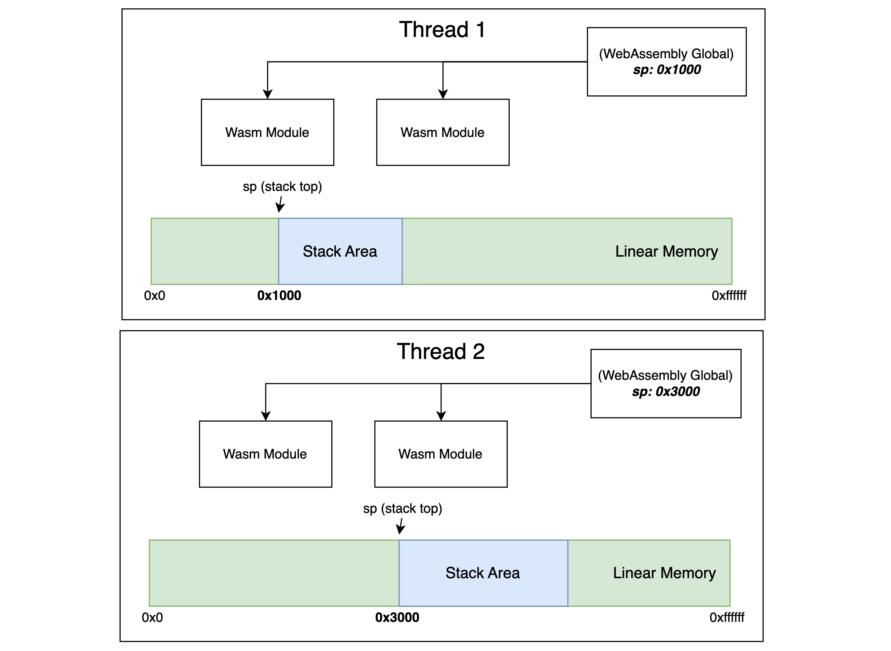

WebAssembly - Import / Export Mutable Globals Proposal
好久没关注 Wasm 圈子，从今天起准备开一个文章系列，详细介绍一下 Post-MVP 中那些已经进入 Phase 4 的提案。今天的主角是 - “Import / Export Mutable Globals Proposal”，GitHub 链接在这里。该提案允许从（向）宿主环境导入（出）“mutable global”。
这个提案目前已经在大多数运行时（包括浏览器）中支持，直接来看下面这个例子：
(module
(import "env" "sp" (global (mut i32)))
(export "loadInt32" (func 0))
(memory (import "env" "memory") 0)
(func (result i32)
(i32.load (global.get 0))
)
)
在上面的 Wasm 模块代码中，我们主要定义了名为 “loadInt32” 的函数，并将它导出到了宿主环境。loadInt32 会按照给定的偏移地址从线性内存的某个位置处读取一个 32 位整型数据（i32.const）。这里的偏移地址便来自于一个 “mutable global” 值。WebAssembly Global（后简称 Global）值可以“导入”和“导出”意味着该值可以动态地在 Wasm 模块实例化时传入，并可在任意时刻再次分享给其他模块实例使用。继续这个例子，我们可以用下面这段 JavaScript 代码来使用这个模块。
const agentSp = new WebAssembly.Global({ value: 'i32', mutable: true, }, 0x10);
const memory = new WebAssembly.Memory({ initial: 10, });
const saveInt32 = (val) => {
agentSp.value -= 4; // Allocate 4 bytes on the stack.
const stackBuf = new DataView(memory.buffer);
stackBuf.setInt32(agentSp, +val, true /* littleEndian */);
}
WebAssembly.instantiate(wasmModule, {
env: {
sp: agentSp,
memory,
},
}).then(
(instance) => {
const { loadInt32 } = instance.exports;
saveInt32(100);
saveInt32(101);
saveInt32(102);
console.log(loadInt32()); // 102.
});
在 Web Binding 中，Global 对应类型 WebAssembly.Global，我们可以在 JavaScript 代码中创建一个该类型对象，给定它的初始值和可变性，然后导入给 Wasm 模块使用。在上面这个例子里，我们模拟了 Wasm 模块和宿主一同使用 “stack pointer” 的情况。Global 值 “agentSp” 维护着当前的栈指针，即指向栈顶的偏移位置。在 JavaScript 函数 “saveInt32” 中，我们通过将栈指针向低地址方向移动的方式来申请栈内存（4 字节），然后在这块内存中存放了给定的 32 位整型值 “val”。接着，实例化前面提到的 Wasm 模块。通过多次调用函数 “saveInt32”，我们向栈内存中连续存入了多组数据。最后，通过调用模块导出函数 “loadInt32”，最后一次写入栈内存的值被返回并打印。
对于 Wasm 模块来讲，Global 实际上可以被简单看做一个可以同时被宿主和模块使用的“全局变量”。但在多 agent 体系中，Global 则主要承担着扮演 TLS（Thread Local Storage）变量的角色。这也就意味着，在一个多线程 Wasm 应用中，每一个 Wasm 处理线程都可以使用自己线程独有的全局变量，这也是提案里提到的最重要一点。“These globals are local to the agent, and cannot be shared between agents. Globals can therefore be used as thread-local storage.”

可以参考上图来更形象地理解。
评论 | Comments